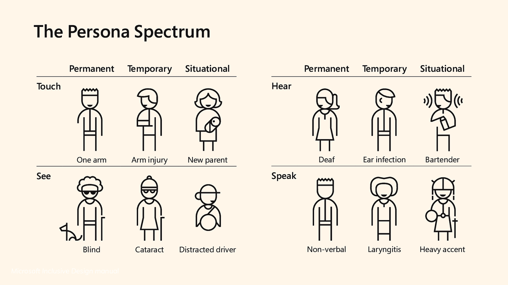

Accessibility 101
Essential for some, useful for all!

Today’s flow
- Why I’m here
- What is a Accessbility
- Who needs it
- What are assistive tools
- What can you do
About me
Why am I here?
to learn, share, and recruit more a11y friends❣️

What is
web accessibility?
Inclusion and access to
information
and services
The curb cut effect

Who is web accessibility for?
❤️ Everyone
Types of disabilities
ü™Ñ Assistive tech
How to create
an accessible experience?
Start with content and HTML, not visuals
Linear experience
❤️ by keyboard only users,
screen readers,
people with different cognitive abilities
Multiple ways
to convey information
Text, video, audio, non-coloured visual treatments
Accessibility is a right
to equal access of your information and services
Creators have power
to enable and disable people
Accessibility
Essential for some, useful for all!
@PraeSongprasit